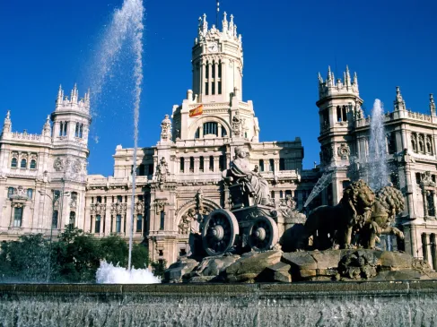

MTVM - Chương 19 (3)

Chương 19 (hết)
Đêm đó tôi không ngủ mấy trên tàu Sud Express. Vào buổi sáng tôi dùng bữa tại khoang ăn và ngắm nhìn vùng quê đầy đá với thông trên đoạn Avila[1] tới Escorial[2]. Tôi thấy vùng đất Escorial bên ngoài cửa sổ, xám xịt và dài dằng dặc và lạnh lẽo dưới ánh nắng, và chẳng màng gì đến nó. Tôi thấy Madrid hiện ra phía trên đồng bằng, đường chân trời màu trắng cô đọng phía trên một vách đá nhỏ nằm phía xa vùng đất nóng bỏng.
Sân ga Norte ở Madrid nằm ở chặng cuối. Mọi chuyến tàu đều kết thúc tại đây. Chúng sẽ không đi nơi nào nữa cả. Bên ngoài nhà ga là xe ô tô và taxi và một hàng mấy tay chạy việc vặt của khách sạn. Nó giống như khung cảnh của một thị trấn nông thôn. Tôi ngoắc một chiếc taxi và chúng tôi đi lên dốc qua những khu vườn, qua những tòa lâu đài bị bỏ hoang và nhà thờ chưa hoàn thiện ở bên rìa vách núi, và cứ đi lên mãi cho tới khi chúng tôi vào tới trung tâm thành phố ở trên cao, nóng nực và hiện đại. Xe dừng lại trên một con đường trải nhựa êm ái tới Puerta del Sol[3], và chờ đèn giao thông chuyển tín hiệu và đi vào đường Carrera San Jeronimo[4]. Các cửa hiệu đều kéo rèm để chống lại cái nóng. Các cửa sổ trên phố ở hướng có mặt trời đều đóng lại. Xe taxi dừng lại nơi lề đường. Tôi nhìn thấy tấm bảng đề HOTEL MONTANA ở tầng hai. Người lái taxi mang túi của tôi vào khách sạn và để chúng lại bên cạnh buồng thang máy. Tôi không thể khiến cho cái thang máy hoạt động, thế là đành phải đi cầu thang bộ. Ở trên tầng hai là một tấm biển bằng đồng đề: HOTEL MONTANA. Tôi nhấn chuông và không có ai ra mở cửa. Tôi nhấn thêm một hồi chuông nữa rồi một cô hầu phòng với bộ mặt đưa đám tới mở cửa cho tôi.
“Xin hỏi có Phu nhân Ashley ở đây không?” tôi hỏi.
Cô ta ngây ra nhìn tôi.
“Ở đây có một bà người Anh không?”
Cô ta quay lại và gọi một ai đó ở phía trong. Một bà rất béo đi tới cửa. Bà ta có mái tóc hoa râm và cả khuôn mặt bóng dầu như cái chảo rán. Bà ta nom thấp người nhưng oai vệ.
“Muy buenos[5],” tôi nói. “Xin hỏi có phải một phụ nữ người Anh đang ở đây đúng không? Tôi muốn được gặp bà ấy.”
“Muy buenos. Vâng, có một phụ nữ người Anh đang ở đây. Ông có thể gặp nếu bà ấy muốn gặp ông.”
“Cô ấy muốn gặp tôi.”
“Cô hầu sẽ đi hỏi bà ấy.”
“Nóng quá nhỉ.”
“Mùa hè Madrid nóng lắm ông ạ.”
“Còn mùa đông thì lại lạnh.”
“Vâng, mùa đông thì lạnh lắm.”
Liệu tôi có muốn ở lại khách sạn Hotel Montana này?
Điều này thì tôi vẫn còn chưa quyết định, nhưng sẽ tốt hơn nếu túi của tôi được mang lên từ tầng trệt phòng trường hợp bị đánh cắp. Chẳng có gì mà lại bốc hơi được ở cái khách sạn Hotel Montana này cả. Ở những thành phố khác, thì có. Nhưng không phải ở đây. Không phải. Những người trong tòa nhà này đều được tuyển chọn rất kỹ càng. Tôi rất vui khi nghe thấy điều đó. Dù sao tôi cũng muốn hành lý của mình được mang lên lầu hơn.
Người hầu gái đi ra và nói rằng bà người Anh muốn gặp ông người Anh ngay.
“Tốt,” tôi nói. “Bà thấy chưa. Tôi đã nói rồi mà.”
“Rõ ràng là vậy.”
Tôi theo chân người hầu phòng đi dọc một hành lang dài và tối. Cô dừng lại gõ vào cánh cửa cuối cùng.
“Ai thế,” Brett lên tiếng. “Phải anh không, Jake?”
“Anh đây.”
“Vào đi. Vào đi.”
Tôi mở cửa ra. Cô hầu phòng đóng nó lại phía sau tôi. Brett ở trên giường. Nàng vừa chải đầu và đang cầm lược trong tay. Căn phòng lộn xộn theo kiểu người ta biết vẫn luôn có người dọn dẹp nó cho mình.
“Anh yêu,” Brett nói.
Tôi tiến về chiếc giường và vòng tay ôm nàng. Nàng hôn tôi, và khi nàng hôn tôi tôi cảm thấy nàng như đang nghĩ về một điều gì đó khác. Nàng run lẩy bẩy trong vòng tay tôi. Nàng dường như thật nhỏ bé.
“Anh yêu em đã trải qua một thời gian thật kinh khủng.”
“Hãy kể cho anh nghe nào.”
“Chẳng có gì đâu. Anh ấy bỏ đi ngày hôm qua. Em làm cho anh ấy ra đi.”
“Sao em không giữ cậu ta lại?”
“Em không biết. Chắc đấy không phải là việc mà một người nên làm. Em không nghĩ là đã làm tổn thương anh ấy.”
“Có lẽ em quá tốt so với cậu ta.”
“Anh ấy đáng lý ra không nên ở cùng ai cả. Em nhận ra điều ấy ngay.”
“Không.”
“Ôi, khốn kiếp!” nàng nói, “mình đừng nói đến nó nữa. Đừng bao giờ nói về điều này nữa.”
“Được rồi.”
“Quả là một cú sốc khi anh ấy cảm thấy xấu hổ về em. Anh biết không, anh ấy xấu hổ về em suốt một thời gian.”
“Không phải thế đâu em.”
“Ôi, đúng là như vậy đấy. Bọn họ nhạo báng anh ấy về em ở quán café, em đoán thế. Anh ấy muốn em để tóc dài. Em, với tóc dài. Em sẽ giống như quỷ mất thôi.”
“Buồn cười thật.”
“Anh ấy bảo như thế thì em sẽ nữ tính hơn. Nhìn em sẽ trông phát khiếp lên ấy chứ.”
“Đã xảy ra chuyện gì vậy?”
“Ôi, rồi anh ấy cũng vượt qua được. Anh ấy không xấu hổ về em lâu lắm.”
“Thế còn chuyện em gặp khó thì sao?”
“Em không biết liệu em có thể khiến anh ấy ra đi không, và em không đủ sức để ra đi và bỏ lại anh ấy. Anh ấy cố cho em rất nhiều tiền, anh biết đấy. Em bảo với anh ấy là em đã có cả tấn rồi. Anh ấy biết là em nói dối. Em không thể lấy tiền của anh ấy được, anh biết đấy.”
“Không.”
“Ôi, mình đừng nói về chuyện này nữa. Dù vậy, cũng có những chuyện vui. Anh cho em một điếu thuốc với.”
Tôi châm thuốc.
“Anh ấy học tiếng Anh khi làm bồi bàn ở Gib.”
“Ừ.”
“Rốt cuộc anh ấy muốn cưới em.”
“Thật ư?”
“Đúng vậy. Em còn không thể kết hôn với Mike nữa.”
“Có thể cậu ta nghĩ rằng như thế sẽ khiến mình trở thành Nam tước Ashley.”
“Không. Không phải thế. Anh ấy thực sự muốn cưới em. Anh ấy nói như thế thì em sẽ không bỏ anh ấy mà đi được. Anh ấy muốn chắc chắn rằng em không bao giờ có thể rời xa anh ấy. Dĩ nhiên là sau khi em nữ tính hơn.”
“Chắc là em cảm thấy bị áp đặt.”
“Đúng thế. Em lại trở lại bình thường. Anh ấy đã xua đi gã Cohn khốn kiếp kia.”
“Ừ.”
“Anh biết là em sẽ sống với anh ấy nếu như em không thấy điều ấy là xấu đối với anh ấy. Bọn em hợp nhau lắm.”
“Ngoại trừ diện mạo của em.”
“Ôi, anh ấy đã quen với điều đó rồi.”
Nàng lấy ra một điếu thuốc.
“Em ba mươi tư tuổi, anh biết đấy. Em sẽ không làm loại đàn bà khốn nạn hủy hoại trẻ em.”
“Không đâu.”
“Em sẽ không như thế. Em cảm thấy khá ổn. Em thấy như thể bị sắp đặt.”
“Ừ.”
Nàng nhìn đi chỗ khác. Tôi nghĩ nàng đang tìm một điếu thuốc khác. Rồi tôi thấy nàng khóc. Tôi có thể cảm thấy nàng đang khóc. Run rẩy và khóc. Nàng không ngước lên. Tôi ôm nàng vào lòng.
“Đừng bao giờ nói về điều này nữa. Xin anh đừng nói về nó nữa.”
“Ôi Brett thân yêu.”
“Em sẽ quay về với Mike.” Tôi nhận ra nàng khóc khi ôm nàng thật chặt. “Anh ấy thật tốt và thật kinh khủng. Anh ấy là kiểu người được dành cho em.”
Nàng không ngước lên. Tôi vuốt tóc nàng. Tôi nhận thấy nàng đang run.
“Em sẽ không là một trong những con khốn ấy,” nàng nói. “Nhưng, ôi, Jake, em xin anh đừng bao giờ đề cập đến nó nữa.”
Chúng tôi rời khỏi khách sạn Hotel Montana. Bà chủ khách sạn không cho tôi trả tiền. Hóa đơn đã được thanh toán từ trước.
“Ôi. Cứ thế vậy,” Brett nói. “Bây giờ thì cũng chẳng sao.”
Chúng tôi đi taxi tới Palace Hotel, để lại mấy cái túi, đặt vé tàu Sud Express có giường nằm cho chuyến tối, chúng tôi bước vào quầy bar của khách sạn và gọi một ly cocktail. Chúng tôi ngồi bên quầy trong lúc người pha chế rượu lắc chiếc bình chế ly Martini.
“Thật là khôi hài bởi cái vẻ hào hoa tuyệt đỉnh mà ta có được nơi quầy bar của những khách sạn lớn,” tôi nói.
“Người pha rượu và cầu thủ jockey là những người duy nhất còn giữ được nét hào hoa.”
“Dù cho một khách sạn có thô lậu thế nào, quầy bar vẫn luôn là một nơi tốt đẹp.”
“Cũng lạ thật.”
“Người pha rượu thì luôn tử tế.”
“Anh biết không,” Brett nói, “cũng khá đúng. Anh ấy mới chỉ mười chín. Điều ấy không đáng ngạc nhiên ư?”
Chúng tôi chạm ly khi chúng được đặt bên nhau trên quầy bar. Chúng chảy nước lạnh. Bên ngoài khung rèm cửa sổ là mùa hè Madrid nóng bỏng.
“Tôi thích một trái ô liu trong ly Martini,” tôi nói với người pha rượu.
“Vâng, thưa ông. Của ông đây.”
“Cám ơn anh.”
“Anh nên hỏi, em biết đấy.”
Người pha rượu lùi về phía bên kia của quầy bar đủ xa để không nghe được câu chuyện riêng của chúng tôi. Brett nhấp một ngụm trong ly Martini khi nó nằm trên mặt quầy. Rồi nàng nhấc cái ly lên. Tay nàng đã đủ chắc để nâng nó lên sau ngụm đầu tiên.
“Ngon thật. Quán bar này được quá, đúng không?”
“Đúng vậy.”
“Anh biết đấy lúc đầu em đâu có tin. Anh ấy sinh năm 1905. Lúc ấy em đang học ở Paris. Cứ nghĩ về điều ấy mà xem.”
“Em muốn anh nghĩ gì về nó?”
“Đừng ngớ ngẩn thế. Liệu anh có vui lòng mời một quý cô một ly không?”
“Làm ơn cho chúng tôi thêm hai ly Martini nữa.”
“Như trước ạ, thưa ông?”
“Rượu ngon lắm,” Brett mỉm cười với anh ta.
“Xin cảm ơn bà.”
“Ồ, cạn ly,” Brett mời.
“Cạn ly!”
“Anh thấy đấy,” Brett nói, “anh ấy mới ở bên hai người đàn bà trước đó. Anh ấy chẳng bao giờ quan tâm tới thứ gì ngoại trừ đấu bò.”
“Cậu ta vẫn còn rất nhiều thời gian.”
“Em không biết. Anh ấy nghĩ đấy là em. Chứ không phải buổi biểu diễn nói chung.”
“Ồ, đó là em.”
“Vâng, đó là em.”
“Anh cứ nghĩ là em sẽ chẳng bao giờ nói về điều đó nữa.”
“Em làm thế nào được đây?”
“Em sẽ đánh mất nó nếu em nói về nó.”
“Em chỉ đề cập loanh quanh đến điều đó thôi. Anh biết là em cảm thấy khá ổn mà, Jake.”
“Em nên như vậy.”
“Anh biết là em sẽ cảm thấy dễ chịu hơn khi quyết định không đóng vai một đứa lẳng lơ.”
“Ừ.”
“Đó dường như là những gì ta có thay vì Chúa.”
“Có những người có Chúa,” tôi nói. “Khá nhiều.”
“Ông ta chưa bao giờ giúp đỡ gì em cả.”
“Cho chúng tôi thêm ly Martini nữa nhé?”
Người pha chế rượu pha thêm hai ly Martini nữa và rót chúng vào những chiếc cốc mới.
“Mình đi đâu ăn trưa nhỉ?” tôi hỏi Brett. Quán bar rất mát. Anh có thể cảm nhận được hơi nóng bên ngoài cửa sổ.
“Ở đây á?” Brett hỏi.
“Ở chỗ này buồn quá. Anh có biết một quán tên là Botin không?” tôi hỏi người pha rượu.
“Vâng, thưa ông. Ông có muốn tôi viết địa chỉ ra không ạ?”
“Cám ơn anh.”
Chúng tôi dùng bữa trên lầu ở nhà hàng Botin. Đó là một trong những nhà hàng tuyệt diệu nhất trên đời. Chúng tôi dùng món heo sữa quay và uống rioja alta[6]. Brett ăn không nhiều. Nàng chẳng bao giờ ăn nhiều. Tôi ăn một bữa ra trò và uống ba chai rioja alta.
“Anh thấy thế nào, hả Jake?” Brett hỏi. “Chúa ơi! Anh đã ăn những gì ấy.”
“Anh ổn. Em dùng tráng miệng không?”
“Trời ạ, không.”
Brett hút thuốc.
“Anh thích ăn, đúng không?” nàng hỏi.
“Ừ,” tôi nói. “Anh thích nhiều thứ.”
“Anh thích làm gì?”
“À,” tôi nói, “anh thích làm nhiều thứ lắm. Em muốn dùng tráng miệng không?”
“Anh hỏi em một lần rồi,” Brett trả lời.
“Ừ,” tôi nói. “Đúng vậy. Mình hãy gọi thêm một chai rioja alta nữa.”
“Rượu ngon lắm.”
“Đấy là em chưa uống thứ này nhiều,” tôi nói.
“Em có. Anh không biết đấy thôi.”
“Hãy lấy hai chai nữa,” tôi nói. Rượu được mang đến. Tôi rót một ít vào ly của mình, và vào ly khác cho Brett, đổ đầy rượu vào ly của tôi. Chúng tôi chạm ly.
“Cạn ly!” Brett nói. Tôi uống cạn rồi rót đầy lần nữa. Brett đặt tay lên tay tôi.
“Anh đừng tự chuốc mình say, Jake,” nàng bảo. “Anh không cần phải làm thế.”
“Làm sao em biết?”
“Đừng,” nàng nói. “Rồi anh sẽ ổn thôi.”
“Anh không say đâu,” tôi bảo. “Anh chỉ uống có chút rượu thôi. Anh thích uống rượu mà.”
“Anh đừng say,” nàng bảo. “Jake, anh đừng để mình say.”
“Em muốn đi dạo không?” tôi hỏi. “Muốn đi quanh thành phố không?”
“Được,” Brett trả lời. “Em chưa thăm thú Madrid. Em nên xem Madrid.”
“Anh sẽ uống nốt chỗ rượu này,” tôi nói.
Chúng tôi đi qua phòng ăn dưới tầng trệt để ra đường. Một anh bồi gọi cho chúng một chiếc taxi. Ngoài đường nóng nực và sáng sủa. Trên phố có một quảng trường nhỏ có trồng cây và bãi cỏ nơi các xe taxi đang đậu. Một chiếc taxi đi lên phố, anh bồi đánh đu bên hông xe. Tôi đưa anh ta tiền boa và nói địa điểm cho người tài xế, rồi ngồi vào bên cạnh Brett. Người lái xe cho xe đi xuống phố. Tôi ngồi lại cho thoải mái. Brett nhích vào gần tôi. Chúng tôi ngồi sát bên nhau. Tôi vòng tay ôm nàng và nàng dựa vào tôi một cách thoải mái. Trời thật nóng và sáng sủa, và những ngôi nhà được sơn màu trắng tinh. Chúng tôi rẽ sang Gran Vía[7].
“Ôi, Jake,” Brett nói, “chúng mình đáng lý ra đã thật hạnh phúc nếu ở bên nhau.”
Đằng trước là một viên kị binh trong bộ đồ khaki đang điều khiển giao thông. Anh ta giơ chiếc dùi cui lên. Chiếc xe giảm tốc khiến Brett ngã dúi vào tôi.
“Ừ,” tôi trả lời. “Chẳng phải thật tuyệt khi cho là vậy hay sao?”
[1] Avila: một thành phố ở miền trung của Tây Ban Nha, nằm ở phía tây thủ đô Madrid
[2] Escorial: một công trình vĩ đại hình tứ giác được xây bằng đá granite nằm gần Madrid, vào thế kỷ 16 bởi vua Philip II của Tây Ban Nha; bao gồm một cung điện, một nhà thờ, một nhà nguyện, v.v
[3] Puerta del Sol: (tiếng TBN có nghĩa là “Cổng Mặt Trời”) là một trong những nơi nổi tiếng và tấp nập nhất tại Madrid, Tây Ban Nha. Đây là trung tâm (Km 0) của mạng lưới đường giao thông xuyên tâm của Tây Ban Nha. Quảng trường này cũng có đồng hồ nổi tiếng đánh chuông ăn mừng năm mới theo truyền thống. Puerta del Sol có nguồn gốc là một trong những cổng thành bao quanh Madrid ở thé kỷ 15. Bên ngoài thành, các khu ngoại thành thời Trung cổ bắt đầu phát triển xung quanh Thành Kitô giáo vào thế kỷ 12. Tên của cửa thành được lấy từ hình vẽ trang trí mặt trời mọc ở lối vào.
[4] Carrera San Jeronimo: tên một con phố ở trung tâm của Madrid
[5] Muy buenos: (tiếng TBN) Tốt quá, tuyệt vời, tốt lành, v.v. Người Tây Ban Nha vẫn thường dùng để chào hỏi nhau mỗi khi gặp mặt.
[6] rioja alta: một loại rượu vang. Rượu được làm từ nho trồng ở vùng La Rioja, Navarre và Basque
[7] Gran Vía (Tiếng TBN: Đường lớn) là một con phố mua sắm lộng lẫy nằm ở trung tâm của Madrid. Nó kéo dài từ Calle de Alcalá, gần với Plaza de Cibeles, tới Plaza de España. Đây là con phố nhộn nhịp bậc nhất ở khu vực mua sắm trong thành phố, có rất nhiều khách sạn lớn và các rạp chiếu phim; và nhiều công trình kiến trúc có giá trị nghệ thuật. Ngày nay, hầu hết các công trình này đều đã bị thay thế bởi các trung tâm thương mại. Vào những năm 20 của thế kỷ trước, con phố này là điểm tham quan nổi tiếng bởi sự đa dạng về mặt kiến trúc của các tòa nhà từ phong cách Vienna, Plateresque, Neo-Mudéjar, Nghệ thuật trang trí và các phong cách khác.
===
Comments